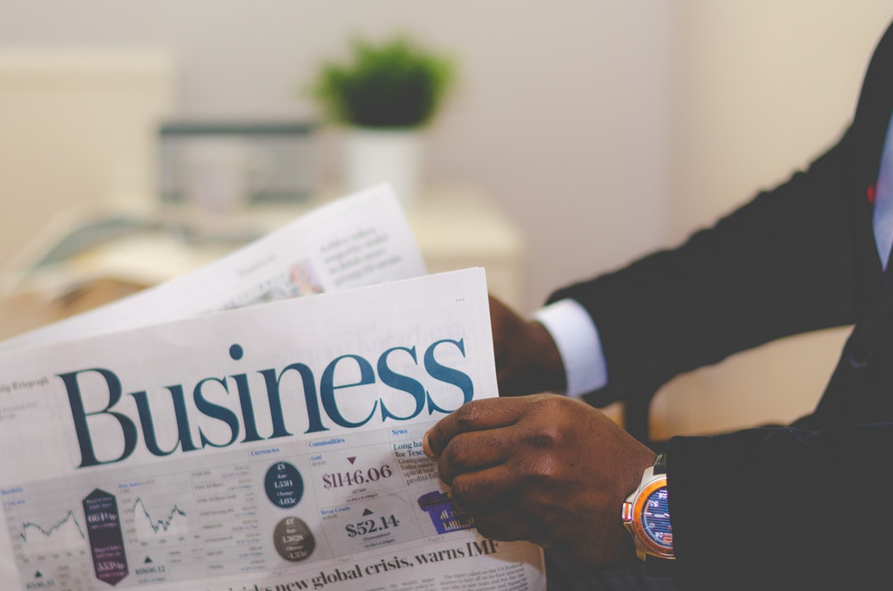
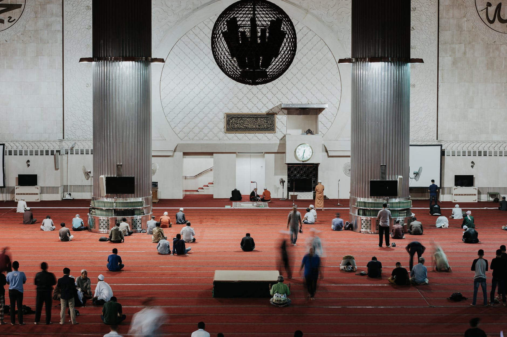

About
This Campaign Aims To Tackle Prejudice Against Muslims
Many misconceptions of Islam and Muslims have led many people to develop stigmas and stereotypes
about the religion as a whole. Some people believe Islam to be a violent religion due to their
overgeneralisation of the behaviours of minority "Islamic" terrorist groups. The Islam Means Peace
campaign aims to address these misconstrued perceptions of the peaceful religion. It is
important for these people to understand that these terrorist organisations do not represent Islam
at all, and for them to understand what Islam truly stands for. It is not a religion of violence,
but rather one that teaches peace and humility. This campaign also aims to address the distorted
views of Islam presented in the media...
Our Goals
- Spread awareness of this prejudice and address it
- Remove negative stereotypes that result in Islamaphobia
- Address the medias role in Islamaphobia
- Take a step closer to a better, less prejudice world
Using the hashtag #IslamMeansPeace
The #IslamMeansPeace hashtag is to spread awareness of the prejudice faced by many Muslims today
due to the negative stereotypes and prejudices about them. Have you ever experienced Islamophobia? Use the # and take to social media
to share your story. Every story shared brings this cause more awareness.
The Role of Media in Islamaphobia

Phrases that are commonly associated with "muslim" terrorists in the media are "Islamic terror"
and "Islamic fundementalism".
However, when addressing white terrorists, the label of their race or identity is commonly left out.
Media today has normalised the phrase "Islamic terrorist" so much that the association between the
has become normalised.
- The "Islamist" Label: It is important to recognise that when the media refers to a
terror attack as "Islamist", they are actually referring to a minority group of extremists.
According to what the holy book of Islam (the Quran) teaches and represents, they are not Muslims
at all. Thus, is it actually fair to use the term "Islamist", which represents a peaceful religion,
to label these extremists?
- Other Terrorism: another issue with media's portrayal of terrorism is that it tends to
overlook race and identity when it comes to non "Islamist" terror attacks. In fact, when terrorist
attacks between 2008 and 2016 were analysed, the number of right-winged inspired attacks were double
that of those that were "Islamist" inspired [The Nation Institute and Center for
Investigative Reporting, 2017]
Attacks against Muslims

These are just some of the attacks Muslims have experienced in Western countries due to their beliefs.
- New York Imam killing: In August of 2016, an Imam and his assistant were shot and murdered near
a mosque, in an attack police classified as a hate crime.
- UK Van Attack: In June of 2017, a 48 year old White man drove a hired van into a group of
worshippers exiting a mosque after night time prayers during Ramadan. The man killed one individual, and
injured 19 others. He was charged with terrorism related murder and attempted murder. The killer allegedly
shouted "I want to kill all Muslims, I did my bit" during the attack.
- Canada Quebec Mosque Shooting: A White man entered a mosque during prayer and shot and killed
6 people whilst seriously injuring a further 5.
- Portland Train Attack: Two men were stabbed and killed, with a third person being seriously injured,
whilst attempting to intervene with a White nationalist verbally abusing two Muslims teenagers with racial
and Islamaphobic slurs.
- New Zealand Mosque Attack: Most recently, on the 15th of March 2019, a White supremist and alt-right
terrorist entered a mosque during Friday prayers and shot and killed 42 Muslims before entering another mosque
and killing a subsequent 7 people. There were 50 people injured in total, and victims included men, women,
children and elderly. This was a violent and targetted terrorist attack against Muslims due to the biased
and prejudiced views he possessed against them.
In Conclusion...
These attacks are just a small number of the violent assaults against Muslims, simply for being Muslim. This sheds
some light on the discrimination and hatred Muslims are faced with due to misconceptions and hatred for a peaceful
religion. Many of these offences were revenge attacks, especially the Islamaphobic attacks that followed the Manchester
bombing that was carried out by an ISIS "Muslim" man in 2017. The concert bombing was a horrific attack that killed several innocent
people. Many of the attacks in the UK that targetted Muslims following this event were revenge related. This highlights some incorrect views
held by many people who believe ISIS represents all Muslims, which is far from the truth. In fact, ISIS are responsible
for slaughtering thousands of Muslims everyday in the middle east. But this fact is consistently overlooked when
these attackers are looking for a reason to hurt Muslims. It is important that these injustices are addressed, and this
campaign aims to do that by educating people of this.
It is also worth highlighting that most of the
attacks mentioned above are perpetrated by extremist White men. However, this issue as a whole is not
addressed by media, nor are White people as a community penalised for the actions of the few extremists of their race.
Whatever the reason for this is, whether it is due to white privilege or how Muslims are viewed by society, it is
important for white people to use their voice and privilege to address these prejudices, and help in changing these
distorted ideologies of Islam and how it is viewed. This campaign wishes to bring together different communities
to help make a positive change in the world.